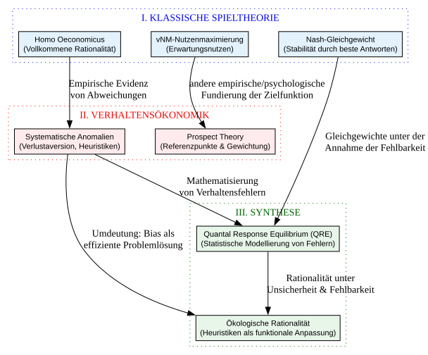

Code
import graphviz
from IPython.display import display
# Erstellung des Graphen mit Fokus auf die theoretische Triade
dot = graphviz.Digraph(comment='Evolution der Spieltheorie',
graph_attr={'rankdir':'TB', 'nodesep':'0.6', 'ranksep':'0.8', 'compound':'true'})
# Globale Stile für bessere Lesbarkeit
dot.attr('node', shape='rectangle', style='filled', fontname='Arial', fontsize='11')
# --- CLUSTER 1: KLASSISCHE SPIELTHEORIE (Der normative Anker) ---
with dot.subgraph(name='cluster_0') as c:
c.attr(label='I. KLASSISCHE SPIELTHEORIE', style='dotted', color='blue', fontcolor='blue')
c.node('HomoOec', 'Homo Oeconomicus\n(Vollkommene Rationalität)', fillcolor='#E3F2FD')
c.node('vNM', 'vNM-Nutzenmaximierung\n(Erwartungsnutzen)', fillcolor='#E3F2FD')
c.node('Nash', 'Nash-Gleichgewicht\n(Stabilität durch beste Antworten)', fillcolor='#E3F2FD')
# --- CLUSTER 2: VERHALTENSÖKONOMIK (Die empirische Kritik) ---
with dot.subgraph(name='cluster_1') as c:
c.attr(label='II. VERHALTENSÖKONOMIK', style='dotted', color='red', fontcolor='red')
c.node('Prospect', 'Prospect Theory\n(Referenzpunkte & Gewichtung)', fillcolor='#FFEBEE')
c.node('Biases', 'Systematische Anomalien\n(Verlustaversion, Heuristiken)', fillcolor='#FFEBEE')
# --- CLUSTER 3: SYNTHESE (Die moderne Integration) ---
with dot.subgraph(name='cluster_2') as c:
c.attr(label='III. SYNTHESE', style='dotted', color='darkgreen', fontcolor='darkgreen')
c.node('EcoRat', 'Ökologische Rationalität\n(Heuristiken als funktionale Anpassung)', fillcolor='#E8F5E9')
c.node('QRE', 'Quantal Response Equilibrium (QRE)\n(Statistische Modellierung von Fehlern)', fillcolor='#E8F5E9')
# --- NEUE VERBINDUNGEN (Logischer Fluss) ---
# Der Bruch mit der Klassik
dot.edge('HomoOec', 'Biases', 'Empirische Evidenz\nvon Abweichungen')
dot.edge('vNM', 'Prospect', 'andere empirische/psychologische\n Fundierung der Zielfunktion')
# Die Brücke zur Synthese
dot.edge('Biases', 'EcoRat', 'Umdeutung: Bias als\neffiziente Problemlösung')
dot.edge('Biases', 'QRE', 'Mathematisierung\nvon Verhaltensfehlern')
# Die mathematische Evolution
dot.edge('Nash', 'QRE', 'Gleichgewichte unter der\n Annahme der Fehlbarkeit')
dot.edge('QRE', 'EcoRat', 'Rationalität unter\nUnsicherheit & Fehlbarkeit')
# Anzeige des Graphen
display(dot)